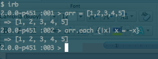
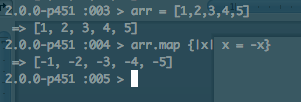

Enumerable's
The Enumerable module provides a set of methods to traverse, search, sort and manipulate collections. What exactly is a module though? A module is very close to the Class class, the Module class is the immediate ancestor of the Class class.
All the Enumerable methods are based of the each method. Looking at Enumerable#map, it transforms each element in the array without altering the original. Of course you can make it alter the original if you like by using map!. When map (or map!) is invoked, it accepts a block of code that acts upon each element in the collection. You can see how map is based off the each method, it effects ‘each’ element.
Enumerable#map
You can’t necessarily use each instead of map though. Using each on an array that you are tying to alter, say turn all the values to negative versions of them, would just cause x to point to another object. Where as map takes the element and then assigns it to its negative counterpart.
With each.

With map.

Array's & Hashes
An array is an ordered collection of objects that you can select based on a numerical index. If the order changes, you can’t just ask for what used to be at index 0 before the change, it just gives you what’s at index 0 currently. Where as hashes store objects in pairs. Each pair has a ‘key’ and a ‘value’. The hash can be put in any order because you just need the key to get the value that’s assigned to it. In a way, the hashes key serves as the index for the hash. This lets you search for an index that is outside of a number. Hashes are good for storing information in pairs that relate to one another, people’s initials could be a key and their full name could be a value.
Both types of collections use the Enumerable module to sort, filter, count and change the collections. Also both array’s and hashes are objects in Ruby so you can assign them to variables and send them messages.